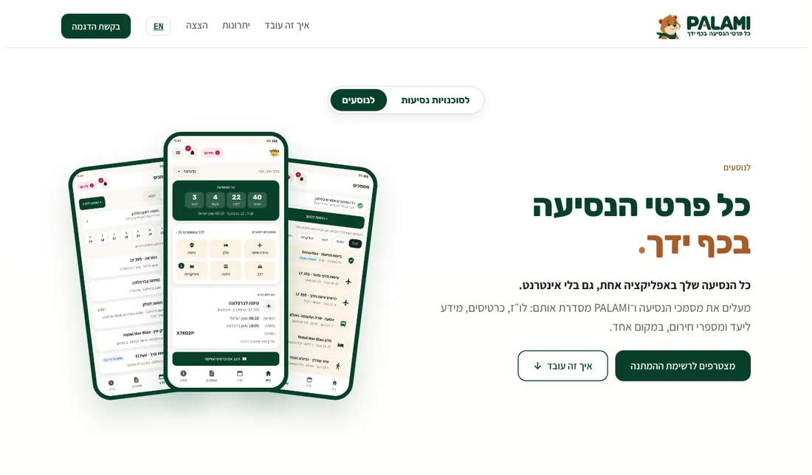
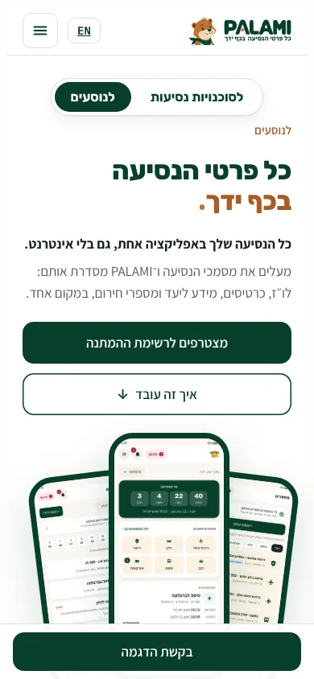
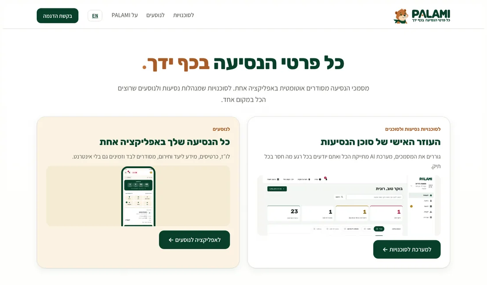
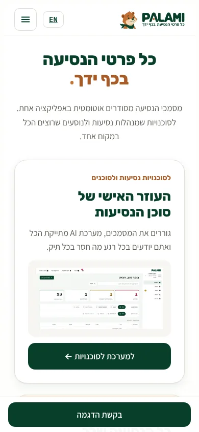
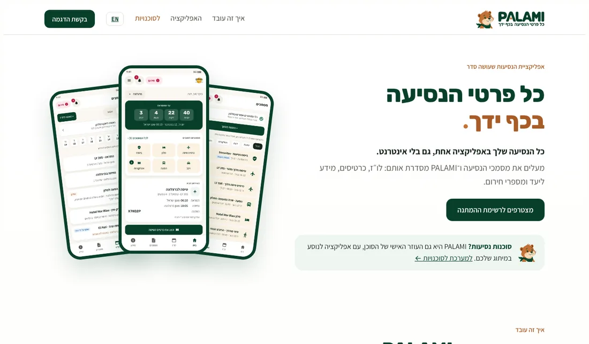
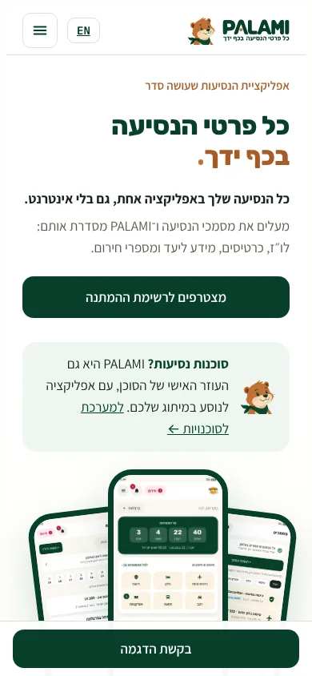
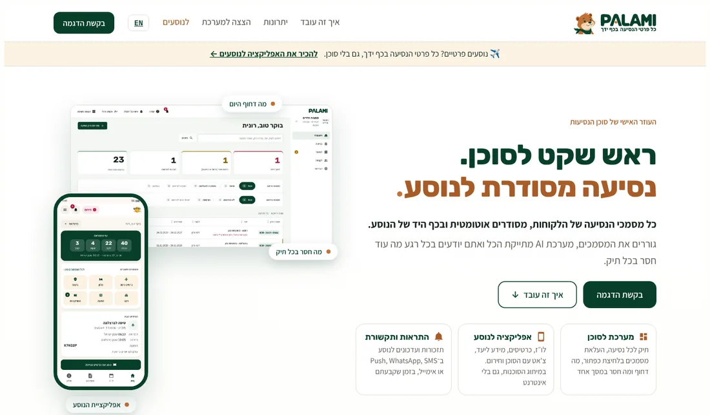
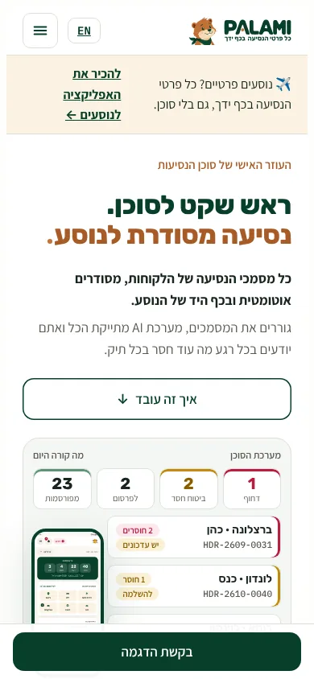
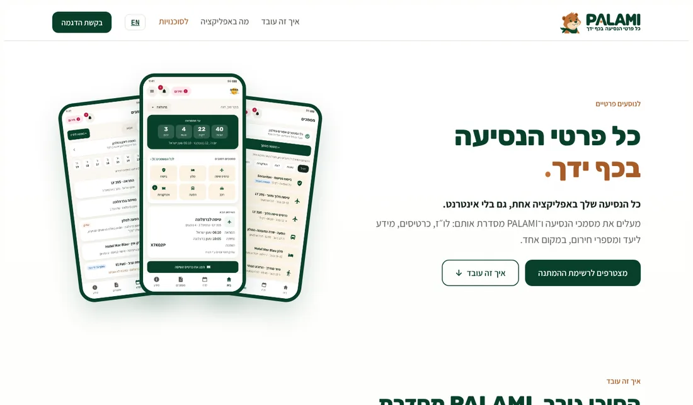
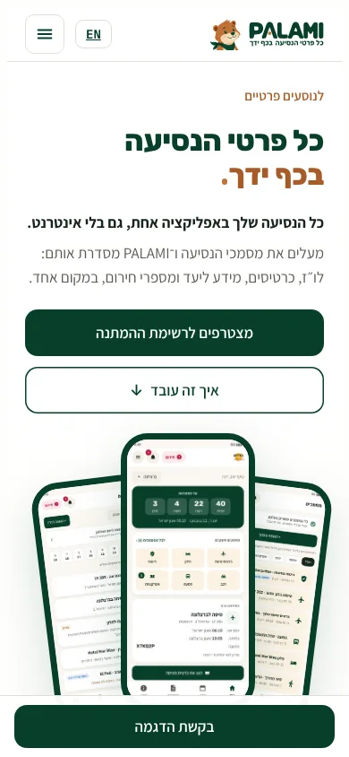

ארבע דרכים לפתוח את האתר גם לנוסעים שירצו להשתמש ב־PALAMI בלי סוכן, בלי לפגוע במסר לסוכנויות. בכל אפשרות: צילומי מסך (מחשב ונייד), איפה השינוי באתר ומה היתרונות והחסרונות.
הטקסטים לנוסעים הם טיוטה. ההנחה בהם: הנוסע מעלה בעצמו את מסמכי הנסיעה, ובשלב הראשון מצטרפים לרשימת המתנה.
עמוד אחד, ובראשו מתג. בחירה ב"לנוסעים" מחליפה את ה־Hero ואת הסקשנים לגרסה לנוסעים (בצילום: מצב "לנוסעים").


מתג מעל ה־Hero, וגרסה לנוסעים לכל סקשן: Hero, איך זה עובד, יתרונות, הצצה וטופס. גם הכפתור בכותרת והפס התחתון בנייד מתחלפים.
כתובת אחת, מיתוג אחד, מעבר מהיר בין הקהלים.
הרבה מבקרים לא לוחצים על מתגים. גוגל ושיתוף קישורים רואים רק גרסה אחת. כפול תוכן לתחזק בעמוד אחד.
עמוד הבית הופך לעמוד מותג קצר עם הסלוגן ושני כרטיסים שווים. כל כרטיס מוביל לעמוד מלא משלו.


עמוד בית חדש. האתר הנוכחי עובר כמעט כמו שהוא ל־palami.io/agencies, ונבנה עמוד חדש ל־palami.io/travelers. התפריט: לסוכנויות, לנוסעים, על PALAMI.
הכי ברור: כל קהל בוחר את הדרך שלו ומקבל מסר נקי. מתאים לצמיחה בשני השווקים, ולכל עמוד יש כתובת משלו לפרסום ולגוגל.
לחיצה נוספת לסוכנויות. עמוד הבית פחות ממוקד במסר אחד. דורש לבנות עמוד נוסעים מלא לפני ההשקה.
עמוד הבית מדבר לנוסעים ("כל פרטי הנסיעה בכף ידך"). לסוכנויות יש פריט בולט בתפריט ורצועה מתחת ל־Hero שמובילה למערכת לסוכנויות.


עמוד בית חדש לנוסעים. האתר הנוכחי עובר ל־palami.io/agencies. בתפריט "לסוכנויות" בצבע נחושת, ובראש העמוד רצועה עם הבונה.
מסר צרכני חזק ופשוט, מתאים לקמפיינים לקהל הרחב ולסלוגן של הלוגו.
הסוכנות, הלקוח המשלם היום, הופכת למשנית. בקשת AWS והפניות לסוכנויות נוחתות על מסר לא שלהן. סותר את ההחלטה שהאתר לא יהיה "רק אפליקציה לנוסע".
האתר הנוכחי לא משתנה. מוסיפים פס עליון דק ("נוסעים פרטיים?") ופריט "לנוסעים" בתפריט, שמובילים לעמוד נפרד לנוסעים.




בעמוד הבית רק שתי תוספות: פס עליון ופריט בתפריט. עמוד חדש לנוסעים, עם ה־Hero, איך זה עובד, מה באפליקציה, שאלות נפוצות וטופס הצטרפות. גם באנגלית.
הכי מהיר ובטוח: לא נוגעים במה שעובד, הסוכנויות ממשיכות לקבל את אותו מסר, ואפשר לבדוק את השוק הפרטי בנפרד ולמדוד אותו.
הנוסעים מקבלים מקום משני בעמוד הבית. אם השוק הפרטי יגדל, נצטרך לעבור לאפשרות ב׳.